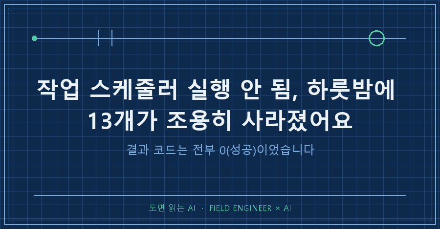
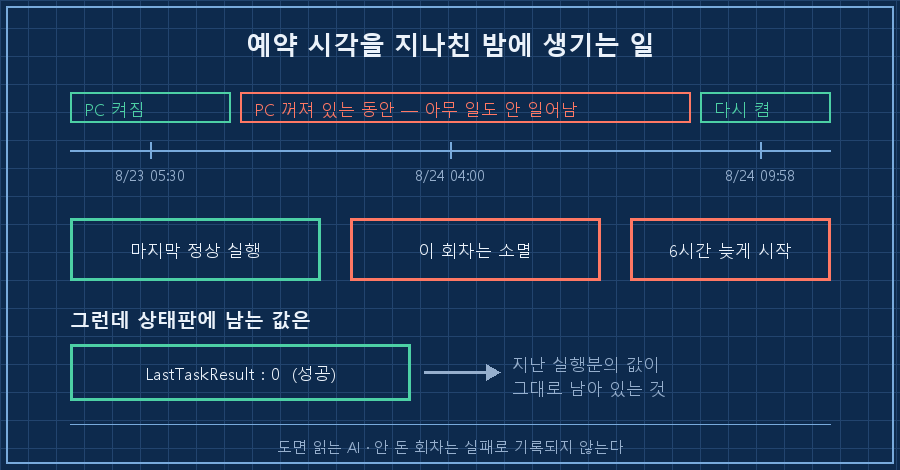
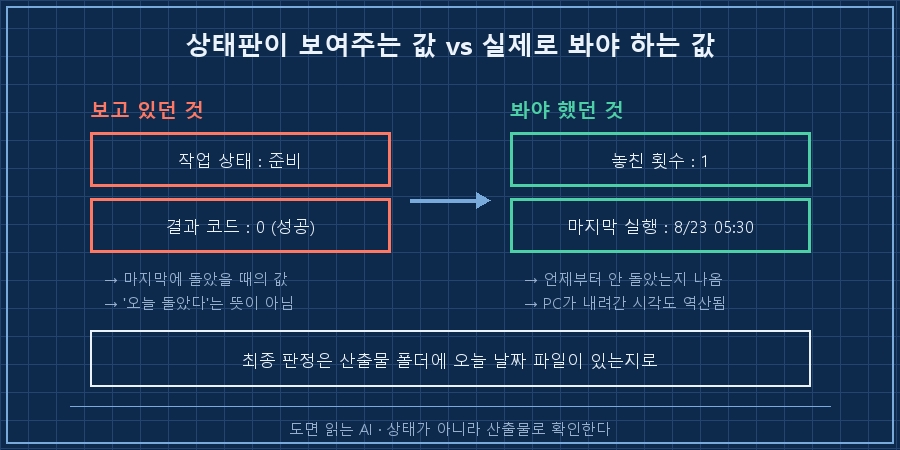

아침에 제 자동화 상태판을 열었더니 예약 작업 21개가 하나만 빼고 전부 "준비" 상태였어요. 결과 코드도 거의 다 0, 그러니까 성공이고요.
그런데 나와 있어야 할 파일이 이틀째 없었습니다.
먼저 답부터 적을게요.
작업 스케줄러 실행 안 됨의 가장 흔한 범인은 스크립트가 아니라 PC가 꺼져 있던 시간입니다. 예약 시각에 컴퓨터가 안 켜져 있으면 윈도우는 그 회차를 그냥 버려요. 나중에 만회해주지 않습니다. 그게 기본 설정이거든요.
그리고 결과 코드는 마지막으로 돌았던 때의 값이라, 며칠을 건너뛰어도 0으로 남아 있습니다.
저는 공장에서 쓰는 제어 장치를 만듭니다. 십오 년째요.
정해진 시각에 정해진 동작이 나오는지 확인하는 게 업무의 큰 축인데, 정작 제 PC의 예약 작업은 몇 달을 안 들여다봤더라고요..
2026년 8월, 윈도우 10에서 있었던 일이고 확인은 전부 파워셸로 했습니다.
1. 결과 코드는 0인데 결과물이 없었어요
제 PC에는 새벽마다 혼자 도는 자동화가 몇 개 있어요. 개인적으로 공부하려고 만든 것들입니다.
그중 하나는 매일 04시에 시작해서 리포트 파일 하나를 폴더에 떨궈요. 그 폴더의 최신 파일이 이랬습니다.
2026-08-22 리포트.docx 2026-08-22 04:14:50 62,536 bytes그날이 8월 24일이었어요. 이틀치가 비어 있던 겁니다.
로그 파일의 첫 줄만 뽑아봤더니 그림이 선명해졌어요.
08-18 [04:00:01] 시작
08-19 [04:00:01] 시작
08-20 [04:00:01] 시작
08-21 [04:00:01] 시작
08-22 [04:00:01] 시작
08-23 [04:00:01] 시작
08-24 [09:58:30] 시작 ← 여섯 시간 늦음엿새 동안 초 단위로 정확하던 게 그날만 09시 58분이었습니다. 04시에는 아무 기록도 없었고요.
시작 기록이 없다는 건 실패한 게 아니라 아예 안 불린 겁니다. 실패라도 했으면 로그 한 줄은 남았을 텐데, 그 회차는 존재 자체가 없었어요.

2. 놓친 횟수를 세봤더니 열세 개였습니다
작업 스케줄러 실행 안 됨을 창에서 눈으로 잡기는 사실 어렵습니다. 목록에 "준비"라고만 떠 있으니까요.
파워셸로 전부 훑었습니다. 예약 작업마다 놓친 횟수가 따로 기록돼 있거든요.
Get-ScheduledTask | ForEach-Object {
$i = Get-ScheduledTaskInfo -TaskName $_.TaskName
if ($i.NumberOfMissedRuns -gt 0) {
"{0} | missed={1} | last={2} | result={3}" -f `
$_.TaskName, $i.NumberOfMissedRuns, $i.LastRunTime, $i.LastTaskResult
}
}돌렸더니 이렇게 나왔어요. 작업 이름만 가렸습니다.
작업A | missed=1 | last=2026-08-22 22:50 | result=0
작업B | missed=1 | last=2026-08-22 23:20 | result=0
작업C | missed=1 | last=2026-08-23 04:30 | result=0
작업D | missed=1 | last=2026-08-23 04:40 | result=1
작업E | missed=1 | last=2026-08-23 05:00 | result=0
... (같은 형태로 13개)
작업M | missed=54 | last=2026-07-01 14:00 | result=0열세 개가 한꺼번에 1씩 밀려 있었어요. 하나씩 고장난 게 아니라 같은 밤에 통째로 날아간 겁니다.
여기서 하나 건졌는데, 이 목록이 PC가 꺼진 시각을 알려줍니다.
마지막 실행 시각 중 가장 늦은 게 8월 23일 05시 30분이었어요. 그 뒤로 예정돼 있던 22시 50분 작업은 안 돌았고요. 그러니까 8월 23일 낮 어딘가에서 PC가 내려갔고, 24일 아침에 켤 때까지 아무것도 안 돈 겁니다.
따로 부팅 기록을 뒤질 필요가 없었어요.
맨 아래 54회짜리는 좀 웃긴 사연입니다. 열어보니 제가 예전에 꺼둔(사용 안 함) 작업이었어요.
꺼진 작업도 놓친 횟수는 꼬박꼬박 올라가고, 결과 코드는 7월 1일에 마지막으로 성공했을 때의 0이 그대로 박혀 있습니다. 목록만 보면 멀쩡한 작업이에요.
3. 기본값 세 개가 이렇게 되어 있었어요
왜 만회 실행이 없었는지는 설정을 보니 바로 나왔습니다. 21개를 전수로 확인했어요.
StartWhenAvailable : False ← 21개 전부
WakeToRun : False ← 21개 전부
DisallowStartIfOnBatteries : True ← 21개 전부셋 다 만들 때 손대지 않으면 이렇게 잡히는 값들이에요. 뜻은 이렇습니다.
| 설정 | False/True일 때 | 작업 스케줄러 창에서 찾을 자리 |
|---|---|---|
| StartWhenAvailable | 놓친 회차를 나중에 만회하지 않음 | 설정 탭 — "예약 시간을 놓친 경우 가능한 대로 빨리 작업 시작" |
| WakeToRun | 절전 중인 PC를 깨우지 않음 | 조건 탭 — "이 작업을 실행하기 위해 절전 모드 해제" |
| DisallowStartIfOnBatteries | 배터리로 돌고 있으면 시작 안 함 | 조건 탭 — 전원 항목 |
노트북이면 세 번째가 특히 아픕니다. 충전기를 안 꽂고 잔 밤은 그냥 통째로 비어요.
바꾸는 건 위 표의 자리에서 체크박스 세 개면 되고, 파워셸로는 설정 묶음을 만들어 덮어씌웁니다.
$s = New-ScheduledTaskSettingsSet -StartWhenAvailable -WakeToRun `
-AllowStartIfOnBatteries -DontStopIfGoingOnBatteries
Set-ScheduledTask -TaskName "작업이름" -Settings $s다만 저는 전부 켜지는 않았어요. 만회 실행을 켜두면 PC를 켠 직후에 밀린 작업들이 한꺼번에 달려듭니다. 새벽 작업 열세 개가 아침에 동시에 뜨는 그림이거든요.
그래서 꼭 그날 안에 나와야 하는 것만 만회를 켜고, 나머지는 하루 건너뛰어도 되게 뒀습니다.

확인은 이 두 줄이면 끝납니다
고쳤는지 아닌지는 다음 날 아침에 이걸로 판정했어요.
Get-ScheduledTaskInfo -TaskName "작업이름" |
Select-Object LastRunTime, LastTaskResult, NextRunTime, NumberOfMissedRuns- LastRunTime이 어제가 아니라 오늘이면 통과
- NumberOfMissedRuns가 어제보다 안 늘었으면 통과
- 그리고 산출물 폴더에 오늘 날짜 파일이 있으면 진짜 통과
세 번째까지 봐야 해요. 앞의 두 줄은 "불렸다"까지만 보장하지 "결과가 나왔다"는 말해주지 않거든요.
얼마 전에 실행 시간 얘기를 적으면서도 같은 결론이었는데, 자동화는 결국 산출물로 확인하는 수밖에 없더라고요.
저도 한참 헷갈렸던 것들
Q. 만회 실행만 켜면 다 해결되나요?
아니요. 그건 "PC가 켜졌을 때 밀린 걸 실행한다"는 옵션이라, PC가 계속 꺼져 있으면 여전히 안 돕니다. 절전 상태에서 깨우려면 절전 모드 해제 옵션이 따로 필요하고, 완전히 종료된 PC는 어떤 설정으로도 못 깨워요.
Q. 결과 코드 0이면 성공 아닌가요?
그 회차가 실행됐다면 성공이 맞습니다. 문제는 실행 자체를 건너뛴 날에는 이 값이 안 바뀐다는 거예요. 저는 54일을 안 돈 작업이 0으로 표시되는 걸 이번에 봤습니다. 결과 코드는 성공 여부지 최신 여부가 아니에요.
Q. 놓친 횟수는 언제 초기화되나요?
저도 초기화 조건까지는 확인 못 했습니다. 실제로 그날 다시 돌린 작업은 이 값이 0으로 돌아가 있더라고요. 그래서 저는 이 숫자보다 마지막 실행 시각을 더 믿습니다. 그건 거짓말을 안 하니까요.
정리하면
- 작업 스케줄러 실행 안 됨의 첫 용의자는 스크립트가 아니라 그 시각의 PC 전원 상태다
- 예약 시각에 PC가 꺼져 있으면 그 회차는 만회되지 않고 사라진다 (기본값 기준)
- 결과 코드 0은 "마지막에 돌았을 때 성공"이라는 뜻이지 "오늘 돌았다"가 아니다
- 놓친 작업들의 마지막 실행 시각을 모으면 PC가 언제 내려갔는지가 역산된다
- 최종 판정은 상태 값이 아니라 산출물 파일의 날짜로 한다
제 상태판은 여섯 시간 늦게 도착한 작업을 성공으로 세고 있었어요. 그것도 틀린 계산은 아닌데, 제가 알고 싶었던 건 그게 아니었죠.
여러분이 예약해둔 작업 중에 마지막 실행 시각이 이번 주가 아닌 게 몇 개나 있을까요. 위의 한 줄이면 3초 만에 나옵니다.
참고로 제 자동화 점검 기록은 makefield.ai 한 군데로 모읍니다. 어차피 다음에 또 까먹을 테니까요.